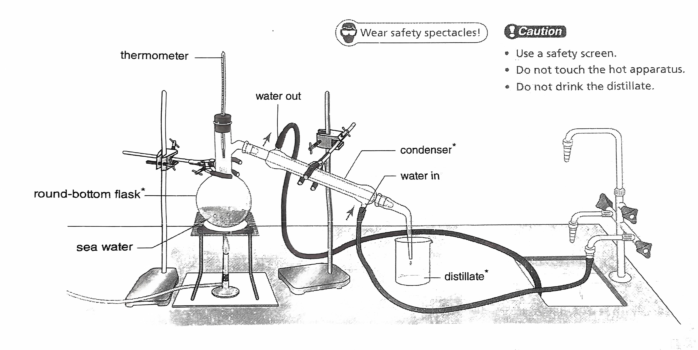

Mastering Science
unit 2 water
Water exists on earth in three physical states. Ice is the solid state. water is the liquid state. water vapour is the gas state.
melting & boiling
- melting: ice turns into water at room temperature(0 ℃).
- boiling: water turns into steam when it boils(100 ℃). when ice melts or water boils, it absorbs energy from the surrounding. the temperature does not change.
freezing
freezing: water turns into ice below the 0 ℃. melting point = freezing point, for water both are 0 ℃. during freezing, water releases energy to the surroundings, temperature does not change.
condensation
condensation may occur at temperatures below the boling point. Energy is released when water vapour or steam cools down and turns into liquid water.
evaporation
evaporation: water turns into vapour. It absorbs energy from the surrounding. Evaporation can take place below its boiling point.
water cycle
flowchart LR
A(ground water)
Evaporation --> Condensation --cloud--> Transportation ----> Raining
Raining --> A --sea--> Evaporation
dissolving
flowchart LR
A(salt solution)
subgraph solute
salt
end
subgraph solvent
water
end
salt --> water
subgraph solution
A
end
water --> A- soluble: substances that can be dissolved in water.
- insoluble: substances that cannot be dissolved in water.
factors affecting rate of dissolving
- the temperature of water is higher.
- the solute pieces are smaller in size.
- the water is stirred.
water purfication
impurities
- insoluble
- plant debris
- sand
- soluble
- mineral salt
- microorganisms
- E.coli
- Amoeba
method of water purification
sedimentation
using alum to settle down insoluble impurities.
filtration
using filtration column to filter out impurities.
distillation
flowchart LR
A(natural water)
B(pure water)
A --boiling--> steam --condensation--> B
A --> impurities 
further treatment of drinking water
method to kill microorganisms
- using chlorine
- kill microorganisms
- local water treatment and swimming pools
- slightly pungent
- using ozone
- more powerful than chlorine in killing microorganisms
- no pungent
- no ozone is left in the water
- using ultraviolet light
- kill microorganisms
- fluoridation
- water undergoes fluoridation before it gives to consumers
- adding fluoride to drinking water can help prevent tooth decay
unit 3 looking at living things
seven vital functions
- living things have ways to obtain food
- living things have ways to obtain air
- living things move
- living things grow
- living things react to stimuli
- living things excrete(not egestion)
- living things reproduce
biodiversity: the wide wariety of living things.
grouping of living things
some key features are related to the adaptation of the animals to their living environment(called habitats)
- animals
- invertebrates(without backbone)
- jellyfish
- crab
- insect
- vertebrates(have a backbone)
- fish
- slimy scales
- gills
- fins
- body temperature changes with the environment
- fish
- amphibians
- moist skin not scales
- the young forms have gills, the adults breathe with lungs and skin
- the adults have four limbs
- body temperature changes with the environment
- reptiles
- have dry, hard scales
- breathe with lungs
- have four limbs
- body temperature changes with the environment
- birds
- have beak and feathers
- breathe with lungs
- have a pair of wings for flying and two other limbs
- can keep a constant body temperature
- mammals
- have mammary glands for producing milk
- have fur or hair on the skin
- breathe with lungs
- have four limbs
- can keep a constant body temperature
- invertebrates(without backbone)
- plants
- non-vascular plants
- do not have vascular tissue
- grow in damp places
- simple stems and leaves, no root
- example: mosses
- vascular plants(xylem transport water, phloem transport food)
- seedless plants
- release spores for reproduction
- seed plants
- non-flowering plants
- do not produce flower
- their are not found in fruits, in cones
- pines, firs
- flowering plants
- produce flower
- seed are protected in fruits
- apple tree, lilies
- non-flowering plants
- seedless plants
- non-vascular plants
identification key
stateDiagram
A:Four kinds of fruits
B:Skin is rough
C:Skin is not rough
D:Skin with hair
E:Skin without hair
F:Only one seed
G:More than one seed
KiwiFruit:Kiwi fruit
classDef leaf fill:orange
A --> B
A --> C
B --> D
B --> E
E --> F
E --> G
D --> KiwiFruit
F --> Avocado
G --> Melon
C --> Plum
class KiwiFruit leaf
class Avocado leaf
class Melon leaf
class Plum leafstep 1 a Skin is rough....................2
b Skin is not rough................plum
step 2 a Skin with hair...................Kiwi fruit
b Skin without hair................3
step 3 a Only one seed....................Avocado
b More than one seed...............Melon
biodiversity
- biodiversity is reducing rapidly
- living things in danger of extinction are called endangered species
unit 4 cells, human reproduction and heredity
cells
- All living things are made of cells
- unicellular organisms: Amoeba, bacteria
- multicellular organisms: plants, animals
- Cells are basic unit of living things
- Observing cells using microscopes
- Light microscopes
- Electron microscopes
cells
| structure | plant cell | animal cell | function |
|---|---|---|---|
| cell wall | ✓ | ✕ | protect,support and give a shape |
| cell memebrane | ✓ | ✓ | controls the movement of substances |
| cytoplasm | ✓ | ✓ | chemical reaction take place |
| nucleus | ✓ | ✓ | contains DNA |
| vacuole | ✓(large) | ✓(small) | stores water and minerals |
| chloroplast | ✓ | ✕ | the site of photosynthesis occurs |
DNA in the nucleus
- DNA is genetic material, it carries genetic information to instructs a cell what to do.
- DNA determines the traits of living things.
- To fit into the small nucleus, DNA is coiled tightly into a structure called chromosome.
chromosome
- chromosomes exist in pairs in the body cells
- one from female parent, the other from male parent
- each body cell has two set of chromosomes
- in human body, there are 46 chromosomes or 23 pairs chromosomes
- 23rd pair determine sex. male are XY, female are XX
division, growth and differentiation
- New cells are formed by a process of cell division
- Cells become specilized for a particular functions in a process of cell differentiation
levels of organization of living things
flowchart TD
organism --> os1(organ system1)
organism --> os2(organ system2)
os1 --> organ1 --> tissue1 --> A(cell1)
organ1 --> tissue2 --> C(cell2)
os1 --> organ2 --> tissue3 --> E(cell3)
organ2 --> tissue4 --> G(cell4)
os2 --> organ3 --> tissue5 --> I(cell5)
organ3 --> tissue6 --> K(cell6)
os2 --> organ4 --> tissue7 --> M(cell7)
organ4 --> tissue8 --> O(cell8)
flowchart LR
cell(muscle cell) --> ti(muscle tissue) --> stomach --> ds(digestive system) --> humanhuman reproduction
- male
- sperms
- head contains the nucleus, which carries one set of chromosomes,for human 23.
- tail beats to allow the sperm to swim
- sperms
- female
- ova(ovum)
- jelly coat cover the cell membrane
- nucleus carries one set of chromosomes,for human 23.
- the cytoplasm contains a lot of food substances for early embryo development.
- ova(ovum)
| Sperm | Ovum | |
|---|---|---|
| Shape | like a tadpole | like a ball |
| Size | smaller | larger |
| Movement | can move by itself | cannot move by itself |
| Number of chromosomes | 23 | 23 |
birth of a new life
- fertilization: a sperm fuses with an ovum to form a zygote
- a zygote divides repeatedly to form an embryo
- an embryo attaches to the thickened uterine lining in the process of implantation
- through the placenta, nutrients and oxygen from the mother's blood pass to the embryo, and wastes from the embryo pass to the mother's blood for removal.
- from fertilization to birth, it normally takes 38 weeks.
flowchart TD
sperm --> zygote
ovum --> zygote --> embryo --> foetus --> baby
heredity and variation
- the passing on of traits from one generation to the next is called heredity.
- the differences among individuals of the same kind of living things are called variations.
- most variations are caused by both heredity and the environment.
types of variation
- discontinueous variations
- eg. thumb can/canbot bend backwards
- continueous variations
- eg. height, weight and handspan
identical and non-identical twins
- identical twins
- a zygote divides into two cells.
- They are genetically identical.
- non-identical twins
- two ova released at the same time and fertilized by two different sperms, two zygote will formed.
- they are genetically different.
DNA structure
- DNA has two strands, a double helix, looks like a ladder.
- four bases, A,T,C,G
- base pairing: A = T, G = C
- DNA determines proteins that a cell make.
- gene: certain section of DNA of a chromosome provide instructions for making protein.
- DNA sequence: the sequence of bases on the DNA.
eg.
AAC CGG TAT AGT TTC GTC CCT TGT